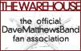
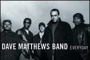
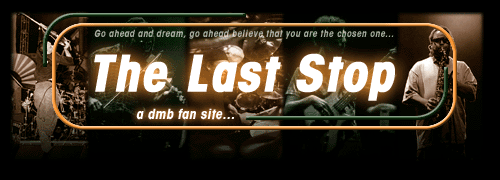
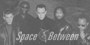

|
Main B&P Status Page My CD-R List Pics |

|
|
Main B&P Status Page My CD-R List Pics |
|
| Here you can find a list of my favorite links to DMB pages, or other miscellaneous links to pages I like. If you are a trader, and would like a link to your list on here, email me or Instant Message me at dpagini84. |
| DMB Sites | | Traders Sites | | Other Sites |
| Link To Me | ||
| Site | Description |
| The Official homepage of The Dave Matthews Band, check it out! | |
| Pete's site that is always bringing you up to date on all the happenings of the DMB world. Check out the message boards there too, I am known as 'tradnbillies' over there. =P | |
| Great DMB site that brings you everything from updates, to the tour archive, and Digital DMB Source | |
| check out James' site...here you can find people willing to do B&P's for you, SHN servers, trees, cover art, traders...a great site, and really worth it for you to check it out | |
|  | The Official Fan Club of The Dave Matthews Band. Join for $30 a year and recieve special packages, advanced ticket sales, enter contests, win give-aways, and check out the special access webpage just for members. |
|  | Official site for the new album. Check out the new single 'I Did It', video interviews, Windows wallpaper, new pictures, and much more in the anticipation of the new CD. |
|  | Great site designed by Matt Horwitz that has .shn servers, video servers, a B&P Network, message forum, and a huge list of shows. Be sure to check it out! |
| Very cool DMB site that is still in the works. Many promised features that should be very cool in the future. They are also the creatures of the Best of the 2000 Tour and 1999 also! | |
|  | brand new site that looks promising...has such features as message boards, tabs, lyrics, news updates etc... |
| Aaron's DMB Trading Page | Great site made by a very cool guy. Check him out, he has some real cool stuff to offer up... |
| J-Dawg's DMB Trading | new to DMB Trading, "J-Dawg" has a new site up and running, check him out for a trade or two |
| Little Thing's Bootlegs | Devin doesn't have to much to his list, but he is a cool kid with a descent site. Check him out... |
| Old, New and Rare DMB | My friend Joey runs this site. He has a really nice collection, so if you can't find what you were looking for here, head over there. If you still can't find the show you want, IM either me or him and we should be able to help you out. |
| DMB Trading Central | Joe is basically just starting out trading, but he is looking to make a site dedicated to helping people find a trade. Check out his page for his list and a list of active DMB Traders in the community today. |
| Great ripping program. Makes exact audio copies of the original CD and reports any sucspicious positions in the track. A must have for any trader. |

| If you want to link to my page with the little picture you see above, just copy and paste the following HTML into your web page or your EZ Board signature. Help support my site, Thanks! |
|
<a href="http://www.grannybootlegs.freeservers.com"><IMG BORDER="0" WIDTH="140" HEIGHT="85" SRC=" http://www.geocities.com/tradnbillies/grannybanner.jpg"></a> |